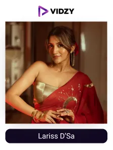
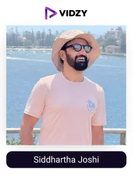
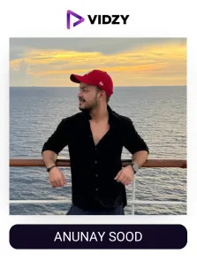
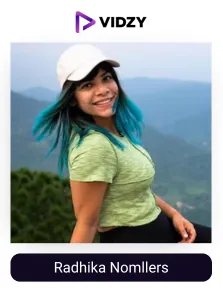
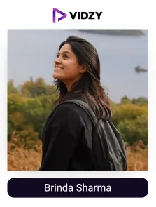
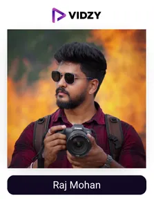
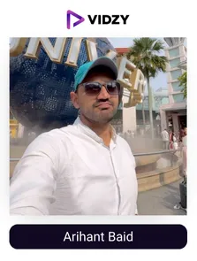
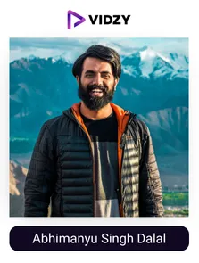
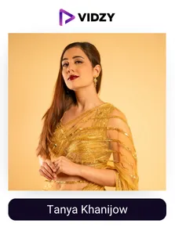
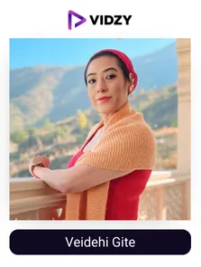

India is a land full of diverse and endless travel experiences. From the snowy peaks of Himachal to the serene backwaters of Kerala, it is a perfect destination for every kind of explorer. With its rich culture, vibrant festivals, mouthwatering cuisine, and historic wonders, it fascinates travellers from all around the world.
Today’s travellers, especially Gen Z and millennials, are always in search of new experiences and adventures to create memories that last a lifetime. According to sources, 86% of travellers look for travel ideas on social media platforms before picking their next destination.
And the ones who bring new adventurous trip ideas and hidden places to spotlight are travel UGC creators whose travel diaries with solo treks to the Himalayas and adventurous bike rides to Leh bring real and inspiring travel experiences straight to our screens, inspiring us to pack our bags and explore the best. A survey revealed that 70% of travel enthusiasts have chosen a travel destination based on suggestions from travel content creators.
The travel UGC creators in India have an impressive engagement rate of 7.9% on platforms like Instagram, showing they are the new-age travel guides giving new travel ideas and influencing their decisions, making it the perfect chance for travel brands to showcase their products to the right audience at the right time. Because of their wide reach and strong connection with followers, brands, travel companies, tourism boards, hotels, and restaurants are teaming up with these creators to build trust, boost visibility, and connect with their audience to achieve remarkable results.
Let’s now understand who travel content creators are, their potential and influence, and how they are perfect partners for brands.
Who are Travel UGC Creators?
Travel UGC creators are individuals who turn their experiences and travel adventures into stories, enabling audiences to virtually explore various destinations.. They inspire others to explore, and by providing essential advice, make travel easier and more exciting for their followers. Whether it’s finding the perfect stay, understanding a new culture, or planning the ideal itinerary, they share tips that will help the audience create the trip they have always desired.
According to YouGov, Travel influencers are the 4th most popular type of creators on social media platforms, inspiring and influencing their audience. When they share their travel experiences, they provide their followers with first-hand insights into various travel destinations, accommodations, activities, cuisines, and cultures, thereby inducing trust and influencing travel decisions.
Travel UGC creators have caught the attention of various travel brands, agencies, airlines, and other businesses in the niche. These brands are partnering with travel creators across India to connect with their audiences and build trust within their communities while meeting their key marketing goals.
Recognising this trend, we, as India’s leading UGC agency — known for consistently delivering high-quality, impactful content — have curated a list of the top travel UGC creators in India. This list is designed to help travel brands collaborate more effectively with creators who don’t just showcase destinations but bring them to life in meaningful and engaging ways.
Top Travel UGC creators in India
Contents
-

1. Lariss D’Sa
Channel: Lariss D’Sa
Followers: 831KEngagement Rate: 1.68 %About The Influencers-
Lariss is an amazing travel UGC creator and storyteller. She is a host on National Geographic India's show called Postcards. She is also a proud GoPro Ambassador. She has won many awards and was on Forbes India's Top 100 list.
Larissa’s way of documenting her travel journey is unique, comprising genuine moments from her vacations, which she presents most artistically on her social media accounts.
She travels to many beautiful places and shows her followers the local culture, food, and beautiful scenes. Her stunning and visually aesthetic content, capturing real people on her journeys, is very much adored by her followers. Besides travel, she also shares her views on social media pressure and how to stay positive online.
-

2. Siddhartha Joshi
Channel: Siddhartha Joshi
Followers: 387KEngagement Rate: 1.92 %About The Influencers-
Siddhartha is a famous Indian travel content creator and fantastic photographer. A travel blogger, photographer, and designer, as his Instagram bio reads, has travelled extensively in India. He shares about his inspiring endeavours, culture, and lifestyles through stunning pictures that he clicks while he travels. He also writes reviews about hotels, cafes, and restaurants.
He has explored every nook and corner of the country to meet and enjoy new experiences. Siddhartha was featured in Times of India, Business Standard, Hindustan Times, etc.
-

3. Anunay Sood
Channel: Anunay Sood
Followers: 1.2MEngagement Rate: 5.69 %About The Influencers-
Anunay is a travel content creator and photographer. He loves adventure and captures breathtaking shots of his travel experiences. His photography skills are amazing, which inspires his followers to set out on their adventures. He has visited almost 31 countries. His stories were a part in Natgeo India, CN Traveller India, Forbes, and Lonely Planet.
He motivates to live a balanced life, all while making tons of travel memories. He has worked with many brands like MakeMyTrip, Airbnb, and the Ministry of Tourism.
-

4. Radhika Nomllers
Channel: Radhika Nomllers
Followers: 629KEngagement Rate: 8.35 %About The Influencers-
Radhika Nomllers is a popular travel influencer who is known for her adventurous explorations and engaging storytelling. She shares her thrilling adventures with her audience. Her feed is full of her love stories with scuba diving, paragliding, skiing, and trekking.
She is a Paraglider as well as an Advanced Diver and ambassador for PADI. With her work, she aims to make travel accessible to everyone and share her passion. With her stunning photos and interesting stories, she introduces her audience to some of the best and beautiful places. She had collaborated with brands like Airbnb, GoPro India, and Decathlon.
-

5. Brinda Sharma
Channel: Brinda Sharma
Followers: 1MEngagement Rate: 6.93 %About The Influencers-
Brinda is a renowned travel content creator. She is known for her vibrant travel content. She has a special love for mountains and shares their beauty via her photographs. She is one of the top 10 travel Instagram influencers in India. Brinda is also a TEDx speaker.
Her focus is on travel and culture, which involves sharing her personal experiences that have made her quite popular among travellers. She has done some amazing collaborations with OYO Rooms, Red Bull, Titan, Travel and Leisure, and India Tourism.
-

6. Raj Mohan
Channel: Raj Mohan
Followers: 644KEngagement Rate: 5.45 %About The Influencers-
Raj is a travel content creator and photographer. He balances his corporate job with his passion for photography and captures India's diverse landscapes and cultural heritage. He uses aerial photography to click and get various perspectives of beautiful places. He was the NHM Wildlife Photographer of the Year award and is referred to as the Oscars of Wildlife Photography.
His Instagram feed is full of beautiful, captivating, and mesmerising snaps of places from India and various International places.
-

7. Arihant Baid
Channel: Arihant Baid
Followers: 1MEngagement Rate: 1.71 %About The Influencers-
Arihant Baid is a prominent Indian travel content creator who balances his profession as a Chartered Accountant with his passion for exploration. He loves exploring hidden spots in India and different international destinations and offers his followers some amazing cultural insights, travel tips, and stunning visuals.
Arihant is also a TEDx speaker. His breathtaking travel experiences combined with practical advice make him a valuable expert in the travel community.
-

8. Abhimanyu Singh Dalal
Channel: Abhimanyu Singh Dalal
Followers: 568KEngagement Rate: 1.95 %About The Influencers-
Abhimanyu is known as @outsidemyrucksack on Instagram. He is a popular travel creator from India. He is also a talented travel filmmaker, aerial cinematographer, and storyteller. He shares beautiful videos and photos from his trips, mostly focusing on peaceful places, hidden spots, and local culture.
His content feels real and calming to his followers. He shares quiet sunsets, remote villages, and offbeat destinations. He also works with travel brands like Agoda to show how to plan budget-friendly trips.
-

9. Tanya Khanijow
Channel: Tanya Khanijow
Followers: 1MEngagement Rate: 5.98 %About The Influencers-
Tanya is a famous female travel influencer known for her endless enthusiasm for travel. She describes herself as a digital nomad who loves exploring new cultures and gathering different experiences. Her audience loves her captivating travel stories and stunning photography. She shares insightful travel guides, practical tips, and personal experiences.
Tanya has partnered with many big brands like Lufthansa, MakeMyTrip, Lonely Planet India, Thomas Cook India, and Singapore Tourism Board.
-

10. Vaidehi Gite
Channel: Vaidehi Gite
Followers: 1MEngagement Rate: 1.18 %About The Influencers-
Vaidehi is a popular travel content creator from India. She is also a reputed author and entrepreneur. Her Instagram platform describes her as crazybutterfly, showing her love for travelling and exploring new and different places. feed showcases her global travels, including recent posts from Spain and Norway. Veidehi also shares her reflections and experiences, such as her thoughts on being a travel influencer and her appreciation for nature.
She posts about boutique hotels, cultural experiences, food, and nature, giving a vibrant and artistic touch to everything.
Conclusion:
Travel UGC creators in India are not just content creators but modern-day explorers who inspire others to embark on their adventures. Through their stunning visuals, engaging stories, and practical travel advice, these creators have changed the way people see and experience the world. For travel lovers, their content is a source of discovery.
For brands, the strategic partnership with the right creator can amplify their marketing efforts with their trusted voices and unique content so that they can gain significant visibility and increase engagement and sales.
The travel-related brands in India are connecting with top travel UGC creators through the best UGC agency in India to build trust, connect with real travel travellers, and share exciting stories that inspire new explorations and adventures.
Start your journey with the right creators today and watch your brand grow!